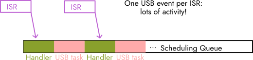
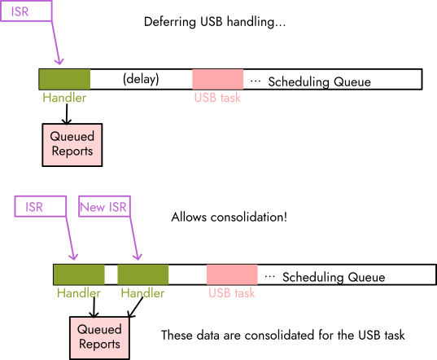

go back/scheduling
scheduling
We employ a scheduler to defer tasks from interrupt context. Doing so allows ISRs to be kept short. Further, if the tasks are deferred in order of interrupt processing, they retain the order of the inputs that produced them. Handling events in-interrupt runs the risk of an interrupt being interrupted due to priority, and for a chronologically earlier event to end up being finished later because it was preempted.
This model also allows for potential power and scheduling optimisation. Queuing allows the core to be run on-demand (if there are elements in the queue) and kept dormant otherwise, while avoiding the inefficiency of starting and stopping the processor for every event handled -- in cases where multiple events occur in succession, they can be handled together. Further, by queuing events, they can be consolidated before being sent across USB, potentially reducing computation. See the diagrams below for an example.

a bad schedule. closely clustered events end up creating a bunch of activity.

a good schedule. by queueing USB handling, it is able to consolidate IRQs in the queueing time.
It is also substantially simpler and more robust than handling all events in-interrupt, or chaining into timers to defer work. Because the area of resource contention is only adding elements to the queue, not the USB interface or several fragmented segments of memory, managing the pseudo-concurrency afforded by interrupts is much easier.
These conclusions were reached after a lot of thought, including how work was supposed to be deferred (only passing data to a central dispatch function, or for each driver to schedule its own explicit task), whether or not to worry about preemption, etc.
We eventually decided upon non-preemptive deferred interrupt handling, with each driver scheduling a distinct function rather than handing its data off to a central dispatcher. This reduces overhead looking up the appropriate function to handle data --- the driver knows this when the interrupt is triggered, and queues the right function to be run. Non-preemption eliminated many data safety worries, especially important given the frequency of interrupts we intend to be dealing with.
We considered several existing options to implement scheduling:
- Protothreads was what we used in class, and could have been sufficient, but does not naturally lend itself to a 'queue-based' approach. The desired behaviour is to queue an event every time an interrupt occurs. Since Protothreads does not have in-built mutex, this could have been a challenge. In addition, Protothreads appears to be designed around continually-recurring events, with a subjectively somewhat awkward interface for defining 'one-shot' events.
- An off-the-shelf real-time operating system (Zephyr, FreeRTOS) could be an option, but come with a substantial amount of complexity, which we wanted to avoid. We don't need a particularly complex scheduler. Both also could impact performance --- Zephyr in particular apparently has poor ISR service times.
- The Pico Async contexts appear to solve these issues, but do not. The polling version is out of the question, as it is explicitly polling, which we wanted to avoid. Documentation of this part of the API is relatively light. Otherwise, none of the included implementations are IRQ safe, and potentially require manual mutual exclusion to manage the event queue. The 'threadsafe' version already uses mutex internally for thread safety, and adding another layer would be computationally burdensome.
While the structure of the Pico Async contexts do technically permit a user implementation, we decide to forgo this route and rely on an external library, equeue (link). This library is by the author of the LittleFS project, a simple file system for embedded systems that we encountered while doing research. The library provides an event queue which is crucially both IRQ and thread safe.
We used the pico_sync module of the Pico SDK to provide platform-dependent functionality for equeue, as below:
- Mutex on memory and the task list are enforced with two mutexes. Using the
critical_sectiontype, these are implemented by disabling interrupts and setting a hardware spinlock. - The queue is notified of events using a
pico_syncsemaphore, which are also implemented using hardware spinlocks on the Pico. - The queue uses a timer for scheduling time-based tasks. This is implemented using the microsecond-precision timer, divided down to milliseconds.
The millisecond granularity is not strictly required by the library, but is implicit in function names. In the future, directly using the microsecond timer / reducing the timer scaling could improve scheduling performance by reducing the delay between events.
Disabling interrupts should not prevent inputs from being processed, as they are not cleared. Pending interrupts remain after interrupts are re-enabled.
This library is generally non-preemptive (barring the option to 'cancel' a task which has not been started, which we did not use). Interrupts only touch the mutex-protected equeue.
These properties allow memory and shared hardware resources to be lock-free, resulting in simpler, faster, and safer code.
equeue dynamically allocates a slab of memory at startup which can be used by child 'processes'. The library provides functions to 'allocate' and 'free' memory in this space, which return pointers in the slab, and do minimal bookkeeping to 'free' old memory. All functions which consume memory in the mouse runtime use this memory pool. Since TinyUSB does not dynamically allocate memory at runtime either, all runtime memory usage by the firmware is statically allocated. Static allocation affords a measure of safety to the system, but also improves performance by removing unpredictable delays caused by dynamic allocation. The equeue allocator is small / simple enough (a for loop plus some branches) to mostly be predictable.
The scheduler lends itself well to further work in power optimisation. Even with the constraints of TinyUSB's polled tud_task, the code can be modified to let the cores sleep when waiting for a task. Modifications to USB handling could further increase these sleep periods.